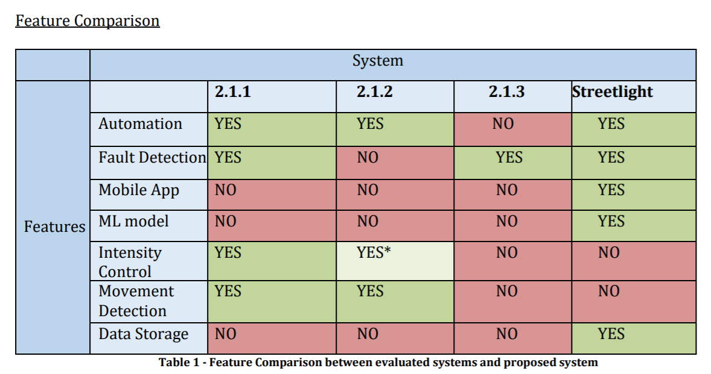
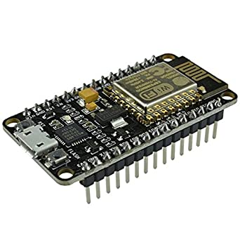
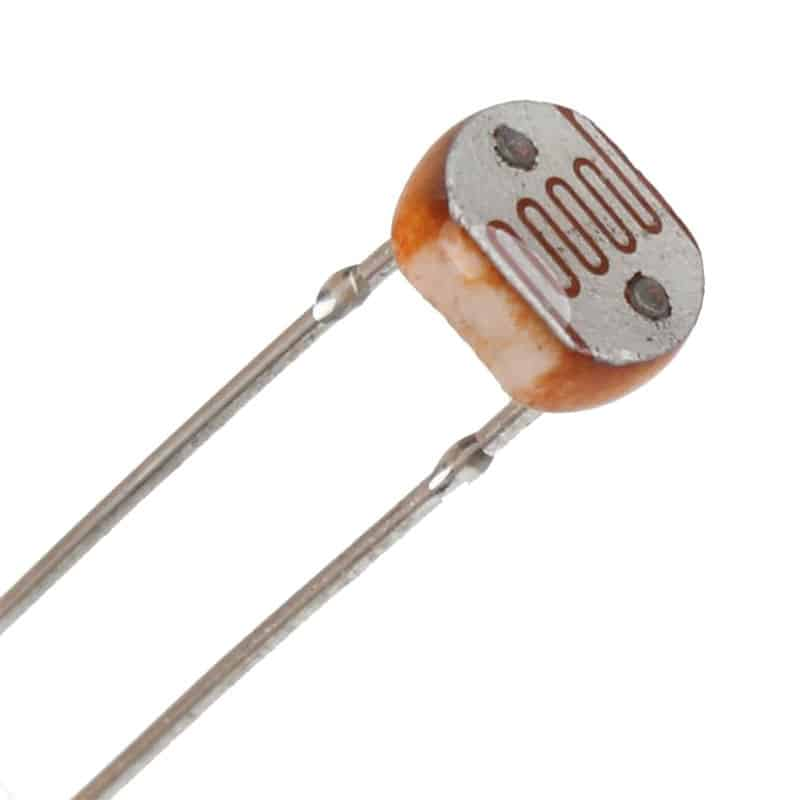

Currently in India, enormous electric energy is consumed by the old street lamps, which are switched on and off always at fixed times and it will require lot of investment to replace all of them. But operation timings of lights should be dependent on weather conditions and sunrise/sunset times. For example, on a very cloudy or foggy day street lights are required even in daytime or in some seasons the sun may rise earlier than expected or set earlier than expected.
Additionally, it is difficult to detect fault in them in the existing system. This system was designed with the aim to solve these problems by having the ability to automatically switch the lights on and off and automatically send alerts of faulty lights to the responsible authorities with location
For the first step we went through several research papers with similar solutions to get an idea of the extent of work done and what could be done differently. We collected the knowledge gained and compared the solutions with our solution to build up the features we could add.

We wanted the system to be built in as low cost as possible and be usable by the majority,
so we researched on the components to use and decided on the easily available and low cost components.
For a board with ability to connect to internet we went for NodeMCU instead of Arduino
or Raspberry Pi because of the integrated WiFi chip, low cost and small size.
The platform to build the mobile application was decided to be Android because of the popularity
of Android devices in the India.
Rest of system consists of low cost and commonly found devices like LDR, potentiometer etc.
 